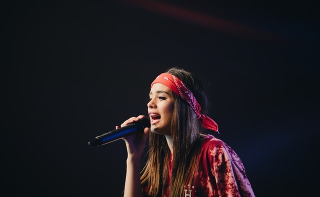
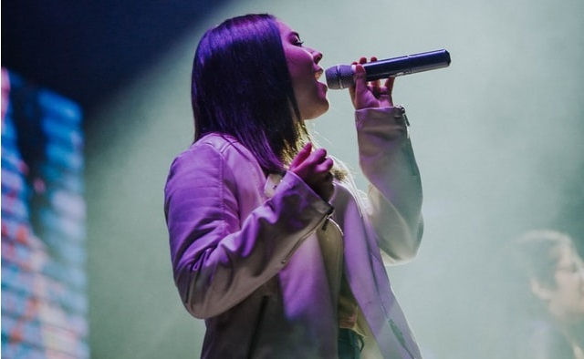

Lena Herbs is a Canadian-American singer, songwriter, and actress. Known for her emotive mezzo-soprano voice and confessional songwriting,
Herbs began her career in Canada in the early 1990s with two highly
successful dance-pop albums.Afterward, as part of a recording deal, she moved to Holmby Hills, Los Angeles at
.
Sheryl Smith
1th July @Stage1
Sheryl Smith is an American musician, singer, songwriter,
and actress. Her music incorporates elements of pop,
rock, country, jazz, and blues.
She has released ten studio albums, four compilations and two live albums, as well as contributed to several film soundtracks.
She plays on Saturday 1th July.
Oxido
1th July @Stage1
Alecia Korn Lopez (born September 8, 1959), known professionally as Oxido,
is an American singer and songwriter. She was originally a member of the girl group Polidor.
In 1995, Sony Records saw potential in Oxido and offered her a solo recording contract.
She plays on 2nd July.

Elizius
2th July @Stage1
Elizius (born 28 May 2000), sometimes known mononymously
as Ely,is an Australian singer, songwriter and actress who holds both Australian and British citizenship. She is the
highest-selling female Australian artist of all time, having sold over 80 million records worldwide.
She plays on 3rd July.
Hanny Leboi
2th July @Stage3
Hanny Leboi is an American musical group consisting of rappers. Originally an alternative hip hop group, they subsequently refashioned
themselves as a more marketable pop-rap act. Although the group was founded in Los Angeles in 1995, it was not until the release of their third album, Elephunk, in 2003, that they achieved high record sales.
Avril Hnechi
2th July @Stage2
Avril Hnechi (born September 27, 1984) is a Canadian singer and songwriter. She has released seven studio albums and has received several accolades and nominations, including eight Grammy Award nominations.
At age 16, Lavigne signed a two-album recording contract with Arista Records.
The Kobinf
3th July @Stage1
The Kobinf are an English rock band from Teignmouth, Devapeon, formed in 1994. The band consists of Matty Arrow (lead vocals, guitar, keyboards), Chris Attend (bass guitar, backing vocals), and Sara Howard (drums).
22
3th July @Stage1
Jessica More, known professionally as "22" , is a Swedish DJ, remixer, record producer, musician and songwriter. At the age of 16, More began posting his remixes on electronic music forums, which led to his first record deal.

Letta Lober
3th July @Stage1
Nicoletta Ana Lober (born January 25, 1981), known professionally as Letta Lober, is an American singer, songwriter and actress. A classically trained pianist, Lober began composing songs by age 12 and was signed at 15 years old by Columbia Records.